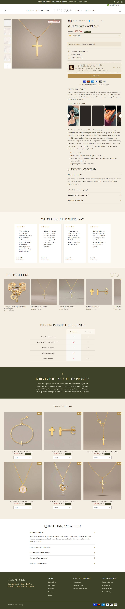

Fonte: coleção de best sellers.
Mediana do catálogo: $56.99 · faixa $9.0 a $80.0
| # | Produto | Preço |
|---|---|---|
| 1 | Slat Cross Necklace | $39.0 |
| 2 | Carry your Cross Adjustable Ring with Dangles | $34.99 |
| 3 | Gift Box + Scripture Card | $9.0 |
| 4 | Twisted Cross Necklace | $34.99 |
| 5 | Crystal Cross Necklace | $34.99 |
| 6 | Slat Cross Earrings | $38.0 |
| 7 | Chunky Cross Necklace | $60.0 |
| 8 | Fero Layered Anklet | $40.0 |
| Criativos únicos (amostra de 44 mais recentes) | 3 |
| Fator de duplicação | 14.7x (mesmo criativo repetido) |
| Anúncios por dia | 11.1/dia · ~77.7/semana |
| Criativos únicos por semana | 5.3 |
| Janela da amostra | 3.96 dias |
| Headline |
|---|
| "Buy 2, Get 1 Free ✝ Ends Today" |
| "The Cross That Won't Turn Green" |
| "Lifetime Color Warranty" |
O que faz o campeão vender, decodificado dos criativos e da PDP: é isto que se copia, não o número de anúncios.
| Big idea / ângulo | A cruz que não esverdeia, com garantia de cor vitalícia. |
| Mecanismo único | Ataca a objeção nº1 de joia barata (oxidação) e a transforma em promessa central, com garantia como redutor de risco. |
| Formato de hook | "Buy 2, Get 1 Free ✝ Ends Today" + "The Cross That Won't Turn Green". |
| Estrutura do presell | PDP direta (stack mínimo, só UpCart) com a garantia de cor como principal argumento de conversão. |
| Objeção principal | "Vai esverdear como as outras." Respondida com "won't turn green" + "Lifetime Color Warranty". |
Widget detectado: —. Ele não expõe o aggregateRating no HTML da página, então a contagem pública não saiu por raspagem.
Transparência sobre os limites desta ficha. Cada linha mostra o que faltou, por quê, e o que foi tentado.
| Dado | Motivo | Método tentado |
|---|---|---|
| Visitas mensais (SimilarWeb) | domínio abaixo do limiar de medição do SimilarWeb | Navegador real (Playwright) com pausas longas. Operações pequenas e recentes não entram no SimilarWeb; o Tranco confirma tráfego abaixo do limiar. Impacto: faturamento estimado só por proxy de anúncios. |
| Contagem de reviews | widget não expõe aggregateRating no HTML | JSON-LD e widgets (Loox/Judge.me/Okendo). Apps detectados: nenhum widget detectado. A contagem só sai inspecionando a chamada XHR da PDP com navegador logado. |
| Pixel ID da Meta | não encontrado no HTML da home | Regex no HTML. O pixel é carregado via GTM ou via Customer Events do Shopify, que não expõe o ID no fonte. |
| Redes sociais | nenhum perfil linkado no site | Varredura de links do rodapé. A ausência é dado: indica operação 100% tráfego pago. |
| Eixo | Pontos | Por quê |
|---|---|---|
| Sourcing simples | 1/2 | catálogo de 102 SKUs |
| Ticket fecha sem escada | 1/2 | buy 2 get 1 é escada |
| Criativo simples de produzir | 2/2 | estático |
| Mecanismo com urgência | 1/2 | presente/fé, objeção de oxidação |
| Investimento de entrada baixo | 2/2 | ticket mais alto, mercado europeu |
| Sem dependência de autoridade | 2/2 | vende no benefício |
Nível é etiqueta de "pra quem serve", não nota de corte: 10-12 iniciante, 6-9 médio, 0-5 avançado. Toda oportunidade de dropshipping vale, muda só o perfil de operador.
Opera em EUR, mercado europeu. Sobrevivencia de 81% (44 ativos de 54), alta, mas volume ainda baixo. Ticket mediano de catalogo mais alto do grupo ($56,99), campeao a $39. Stack minimo (so UpCart), sem e-mail marketing identificado, o que sugere operacao ainda imatura apesar dos 102 produtos. Ataca a objecao de oxidacao ("won't turn green", "lifetime color warranty").